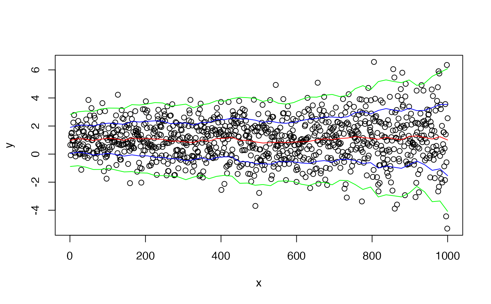
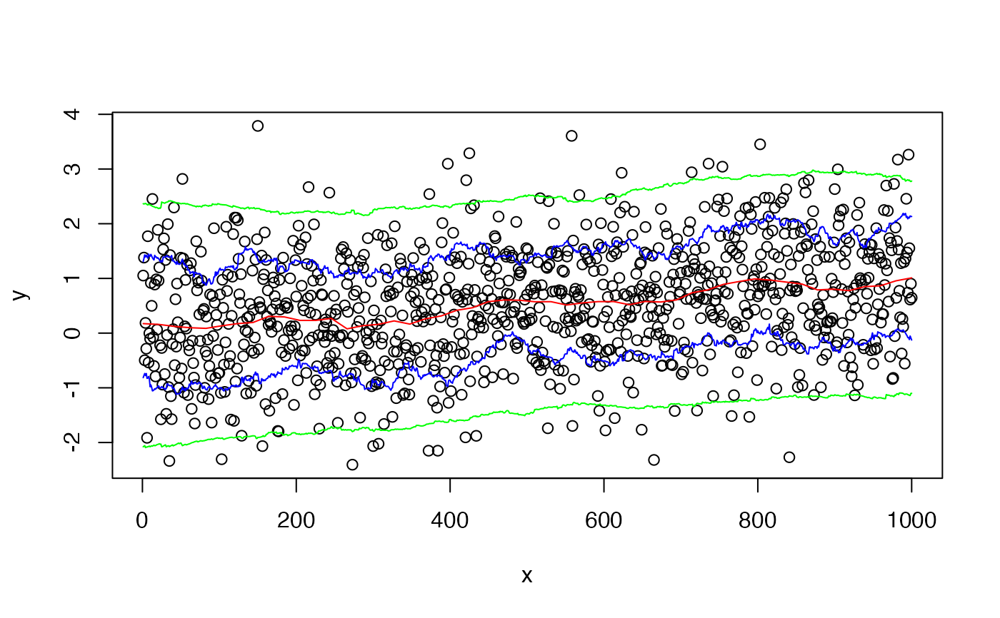

wapply.RdThis function applies the specified function to the sets of y values
that are defined by overlapping "windows" in the x-dimension. For
example, setting fun=mean returns local means, while setting
fun=function(x) sqrt(var(x)) returns local estimates of
the standard deviation.
wapply(x, y, fun=mean, method="range", width, n=50, drop.na=TRUE, pts, ...)
| x | vector of x values for (x,y) pairs |
|---|---|
| y | vector of y values for (x,y) pairs |
| fun | function to be applied |
| method | method of defining an x-neighborhood. One of "width","nobs","range", or "fraction". See details. |
| width | width of an x-neighborhood. See details. |
| n | Number of equally spaced points at which to compute local estimates. See details. |
| drop.na | should points which result in missing values |
| pts |
|
| ... | arguments to be passed to |
Two basic techniques are available for determining what points fall
within the same x-neighborhood. The first technique uses a window with
a fixed width in the x-dimension and is is selected by
setting method="width" or method="range". For
method="width" the width argument is an absolute
distance in the x-dimension. For method="range", the width is
expressed as a fraction of the x-range. In both cases, pts
specifies the points at which evaluation of fun occurs. When
pts is omitted, n x values equally spaced along the x
range are used.
The second technique uses windows containing k neighboring points. The
(x,y) pairs are sorted by the x-values and the nearest k/2 points with
higher x values and the k/2 nearest points with lower x values are
included in the window. When method="nobs", k equals
width (actually 2*floor(width/2) ). When
method="fraction", width specifies what fraction of the
total number of points should be included. The actual number of points
included in each window will be floor(n*frac/2)*2. Regardless of the
value of pts, the function fun will be evaluated at all
x locations.
Returns a list with components
x location'
Result of applying fun to the window about each x location
#show local mean and inner 2-sd interval to help diagnose changing mean #or variance structure x <- 1:1000 y <- rnorm(1000, mean=1, sd=1 + x/1000 ) plot(x,y)#show local mean and inner 2-sd interval to help diagnose changing mean #or variance structure x <- 1:1000 y <- rnorm(1000, mean=x/1000, sd=1) plot(x,y)CL <- function(x,sd) mean(x)+sd*sqrt(var(x)) lines(wapply(x,y,CL,sd= 1,method="fraction",width=1/20),col="blue")